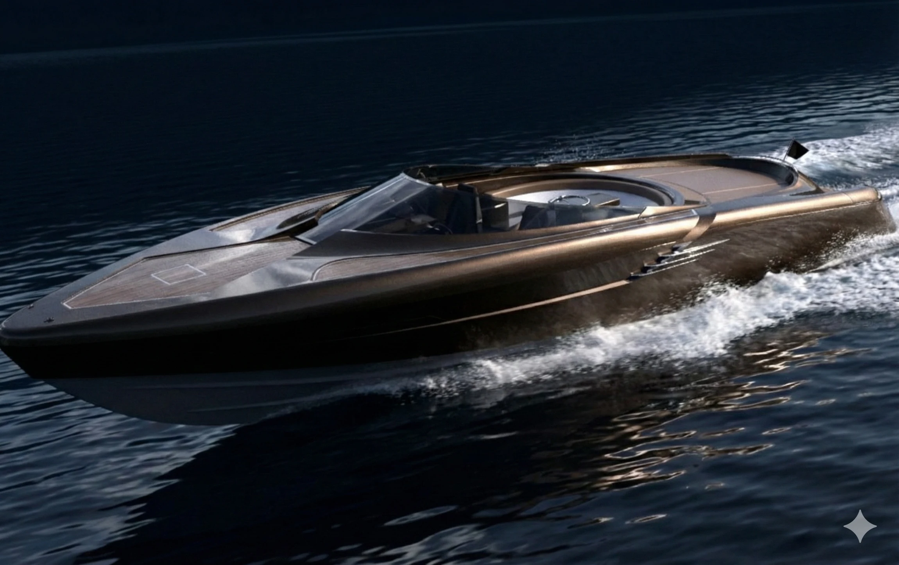
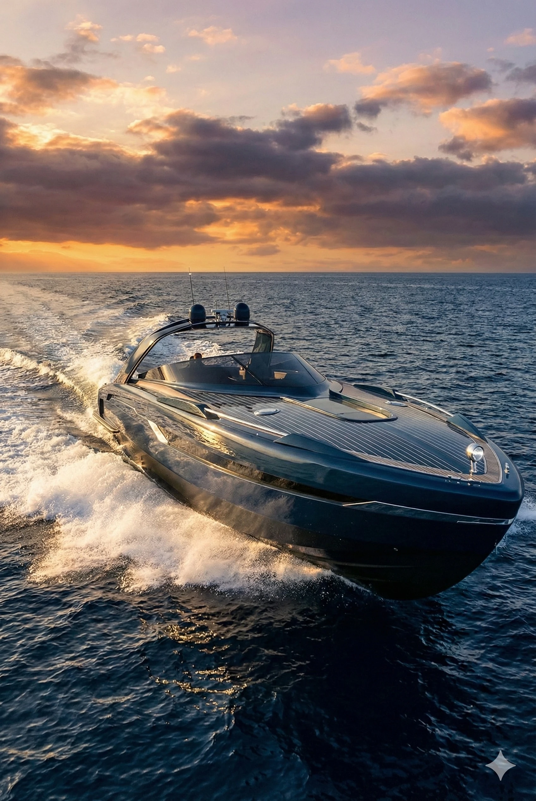
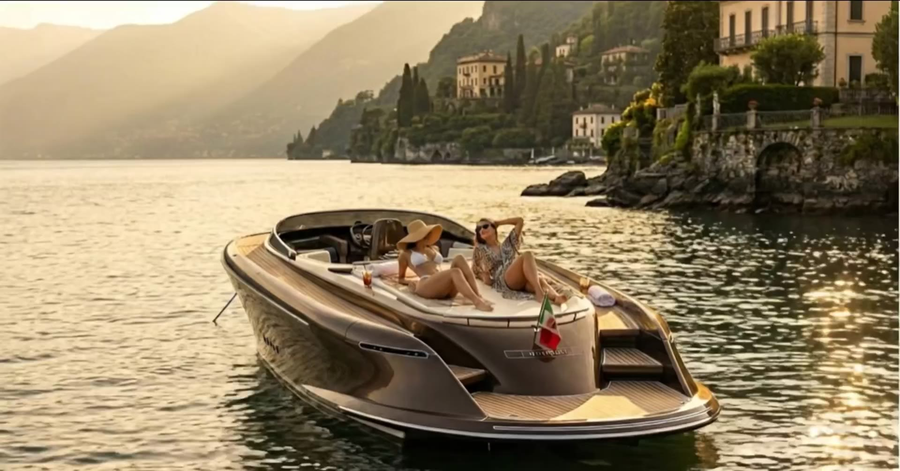
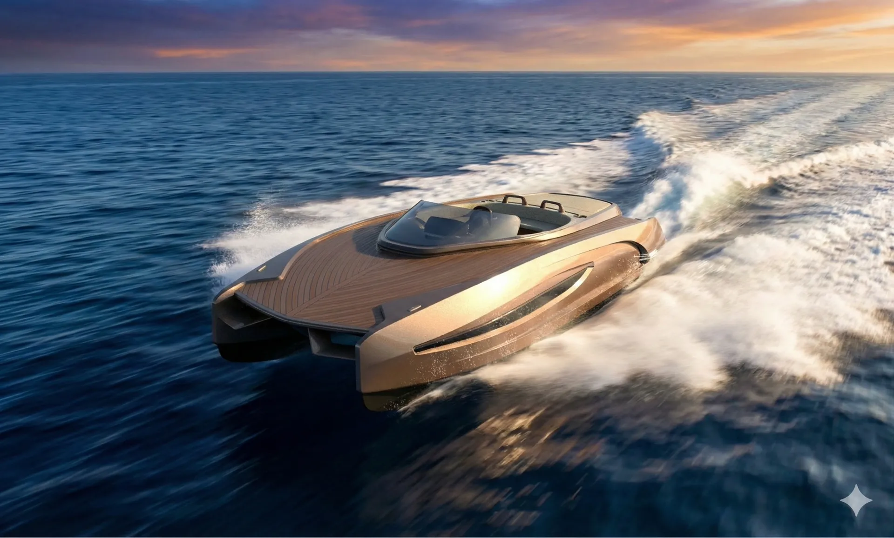
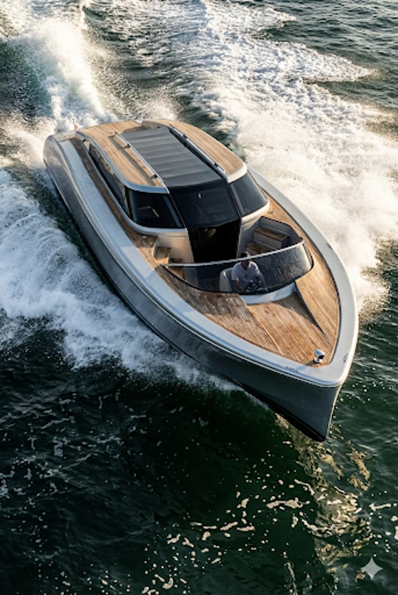

02 / Heritage · Il Lario
Heritage
Stories Written on Water
The heritage of Lake Como. A genuine culture of Italian boating, ingenuity and craftsmanship.


La Vita sul Lago
La Vita sul Lago
The authentic traditions of a working and sporting lake.
Lake Como has long depended on boats for more than pleasure. Fishing, trade, transport and daily work shaped the vessels of its shores. Over time, sailing, motoring and competition added new forms of ingenuity. This layered relationship with the water—practical, social and inventive—is an essential part of the Larian nautical story.
FONTE STORICA · Museo Barca Lariana · CollectionHeritage / 02
Le Barche del Lario
The boats preserved on the Lario reveal a rich range of purposes and characters: traditional rowing boats, sailing vessels, working craft and the increasingly sophisticated motorboats of the twentieth century. At the Museo Barca Lariana, vessels such as the Serie Laghi and Colombo Super Rockett 007 connect visitors to different moments in the evolution of design and performance.
FONTE STORICA Museo Barca Lariana · Museum
Maestria e Coraggio
Maestria e Coraggio
Ingenuity, technical discipline and experience.
Speed on water has always demanded more than an attractive hull. It calls for skill in materials, geometry, mechanics and judgement. The boatbuilding culture of the lake includes the work of designers, craftsmen and racing pioneers whose ideas were tested on the water itself. Their achievements belong to their own people and companies; they help us understand the standards a new nautical project should aspire to.
FONTE STORICA · Museo Barca Lariana · HeritageHeritage / 04
Custodire la Memoria
In 1978, enthusiasts began collecting and safeguarding the boating heritage of the Lario. The Museo Barca Lariana opened at Pianello del Lario in 1982, within a former nineteenth-century silk mill, and reopened in 2018 after a long closure. Its continuing research and restoration work reminds us that real heritage is made of objects, knowledge and evidence—not simply an evocative word in a brand story.
FONTE STORICA Regione Lombardia · Museo Barca LarianaHeritage / 05
Il Futuro della Tradizione
La tradizione is not a story to borrow. The boatbuilders, craftsmen and racing pioneers of Lake Como created their own history. VELLARIO looks to their pursuit of beauty and technical ingenuity as an inspiration for something new, without claiming their achievements as its own.
FONTE STORICA Riva · Official HistoryVELLARIO / ARCHIVIO VISIVO
Visioni contemporanee
ORIGINAL DESIGN STUDIES · NON PRODUZIONE VELLARIO
MAS 52DESIGN STUDY · ORIGINAL ARCHIVE
MAS 52IL FILM · DESIGN STUDY MAS 36DESIGN STUDY · ORIGINAL ARCHIVE
MAS 36DESIGN STUDY · ORIGINAL ARCHIVE MAS 36IL FILM · DESIGN STUDY
MAS 36IL FILM · DESIGN STUDY
Quantum 999DESIGN STUDY · ORIGINAL ARCHIVE Quantum 999IL FILM · DESIGN STUDY
Quantum 999IL FILM · DESIGN STUDY
LariocabDESIGN STUDY · ORIGINAL ARCHIVE LariocabIL FILM · DESIGN STUDY
LariocabIL FILM · DESIGN STUDY